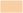
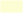
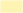

Stadtstrukturen
Stadtstrukturen
Winterthur besteht aus unterschiedlichen Stadtteilen, welche z.T. vergleichbare Stadtstrukturen in Bezug auf die Bebauungs- und Freiraumstruktur aufweisen. Im Rahmenplan Stadtklima werden aufgrund der Strukturmerkmale 20 Stadtstrukturtypen unterschieden.
Aufgrund dieser spezifischen Merkmale sind die verschiedenen Stadtstrukturen auch unterschiedlich anfällig für Überhitzung und es eignen sich nicht überall die gleichen Massnahmen für die Hitzeminderung und Klimaanpassung.
Im Rahmenplan werden deshalb für jede dieser Stadtstrukturtypen spezifische Handlungsempfehlungen für die Hitzeminderung und Klimaanpassung formuliert, die am besten zu den jeweiligen Strukturmerkmalen passen.
Den 20 Stadtstrukturtypen sind 9 übergeordneten Stadtstrukturkategorien zugeordnet, für die beispielhafte Visualisierungen mögliche Klimaanpassungs-Massnahmen aufzeigen.
Im Online-Stadtplan wird zu jeder Parzelle automatisch ein PDF-Bericht mit spezifischen Massnahmenempfehlungen aufgrund der jeweiligen Stadtstruktur erzeugt. Diese Empfehlungen dienen als erste Diskussionsgrundlage für die Planung von Bauvorhaben.
1.1 Kernstadt | |
1.2 Dorfkern | |
2.1 Offener Blockrand | |
 | 2.2 Stadtvillen |
 | 3.1 Einfamilienhäuser |
 | 3.2 Reihenhaussiedlung |
3.3 Mehrfamilienhäuser geringer Dichte | |
3.4 Terrassenhaussiedlung | |
4.1 Zeilenbausiedlung | |
4.2 Mehrfamilienhäuser mittlerer Dichte | |
4.3 Grosswohnsiedlung | |
5.1 Einzelsetzungen | |
5.2 Ensembles | |
6.1 Lager / Logistik / Produktion | |
6.2 Gewerbe / Handel | |
7.1 Alters- und Pflegezentrum / Spital | |
7.2 Schulanlagen | |
7.3 Kirchenanlagen | |
7.4 Öffentliche Verwaltungsgebäude | |
7.5 Sport / Freizeit |
Winterthur besteht aus unterschiedlichen Stadtteilen, welche z.T. vergleichbare Stadtstrukturen in Bezug auf die Bebauungs- und Freiraumstruktur aufweisen. Im Rahmenplan Stadtklima werden aufgrund der Strukturmerkmale 20 Stadtstrukturtypen unterschieden.
Aufgrund dieser spezifischen Merkmale sind die verschiedenen Stadtstrukturen auch unterschiedlich anfällig für Überhitzung und es eignen sich nicht überall die gleichen Massnahmen für die Hitzeminderung und Klimaanpassung.
Im Rahmenplan werden deshalb für jede dieser Stadtstrukturtypen spezifische Handlungsempfehlungen für die Hitzeminderung und Klimaanpassung formuliert, die am besten zu den jeweiligen Strukturmerkmalen passen.
Den 20 Stadtstrukturtypen sind 9 übergeordneten Stadtstrukturkategorien zugeordnet, für die beispielhafte Visualisierungen mögliche Klimaanpassungs-Massnahmen aufzeigen.
Im Online-Stadtplan wird zu jeder Parzelle automatisch ein PDF-Bericht mit spezifischen Massnahmenempfehlungen aufgrund der jeweiligen Stadtstruktur erzeugt. Diese Empfehlungen dienen als erste Diskussionsgrundlage für die Planung von Bauvorhaben.